出発点は残せる
実シーンは120×180mのTerrain 1面。道は17点・16リンク。門前から広場まで約17.4m登る。既存部分を基準として、新規地形と接続する計画が立てられる。
今の門・山道・見晴らし・遊び場を残し、広場の奥から右側の谷へ。
小橋を渡り、川沿いを歩き、古民家の門前へ戻る周回コースの提案。
この周回コースを、普段の本番ファイル VRCDefaultWorldScene に反映しました。旧版はArchiveに保管。切替・整理の記録
一周したときのコースはそのままに、橋をBlenderで作り直しました。広く均一な道の色を抑え、枯草と落ち葉の中に、踏まれた細い道が残る地面へ。要所に既存素材の板ポリ木立を加えています。
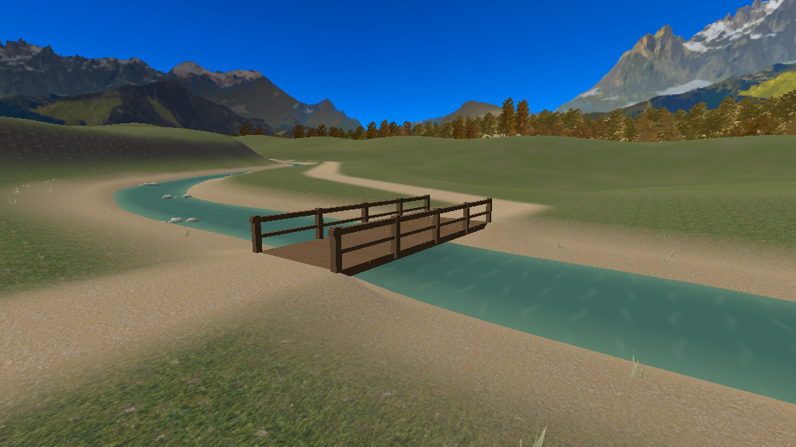
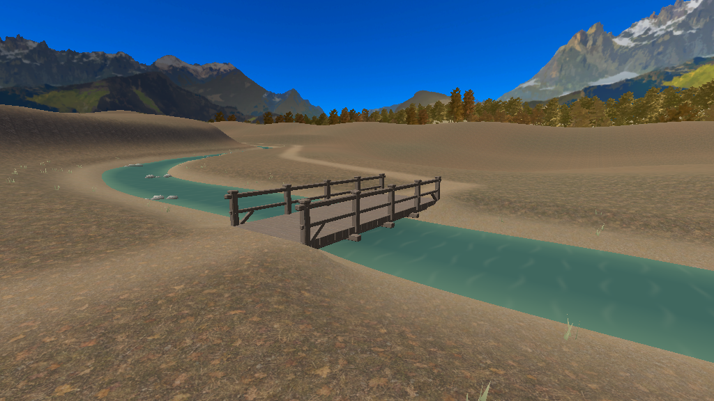
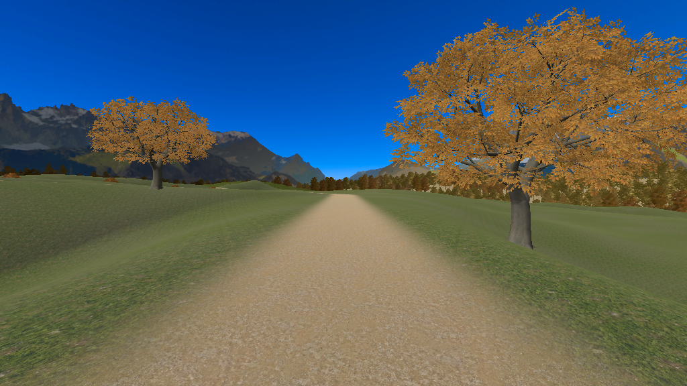
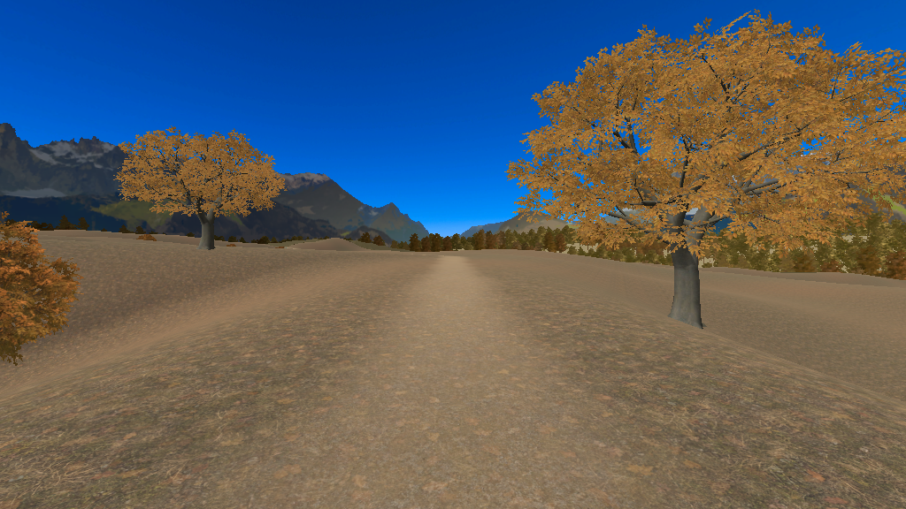
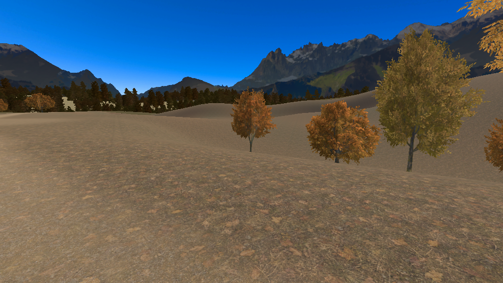
Editor画像です。新しい見た目の実機確認、Quest 3・iPhone 15 Proの16人時性能は未確認。
制作票・検証記録| 計測対象 | 変更前 | 変更後 | 増分 |
|---|---|---|---|
| Android | 43.20 MiB | 44.83 MiB | +1.63 MiB |
| iOS | 42.40 MiB | 44.01 MiB | +1.62 MiB |
同じ保存シーンのAssetBundle代理計測。SDKの配信容量・実機メモリ・FPSではありません。以前のPC SDK 81.23 MiBは今回の景観変更前の値です。計測値
Editorの固定3視点でも遮蔽を計測。描画コールは川の休憩点で297→133、奥広場で275→92。下流橋では272のままでした。見えない景観を省く効果は場所によって変わります。測定条件と記録
犬の水遊び・浮くボールと、地図・地点/プレイヤーへのワープ・リード中の犬の同行は、別Issueに記録しました。
高さのある道の間にできていた直線的な崖を、端まで滑らかにつなぎました。旧エリアは保ち、新しい道の足場と犬の経路も再検査しています。木や描画部品、遊んでいる間の処理は増やしていません。
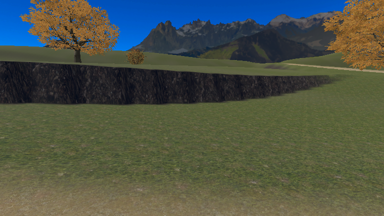
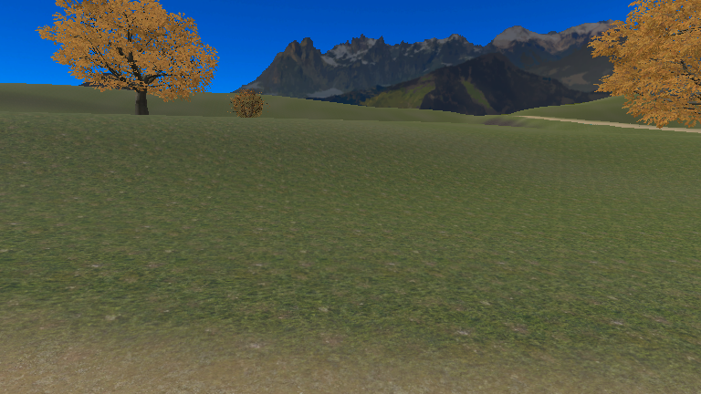
Editorの全周88視点を一覧確認。保存後の足場・経路・遮蔽の検査も通過しています。人と犬の実歩行、VR/端末での表示・16人性能は未確認です。最新の確認記録
林を隠していた外周の盛り上がりを抑えました。地形の継ぎ目は保ち、木・テクスチャ・描画部品は増やしていません。
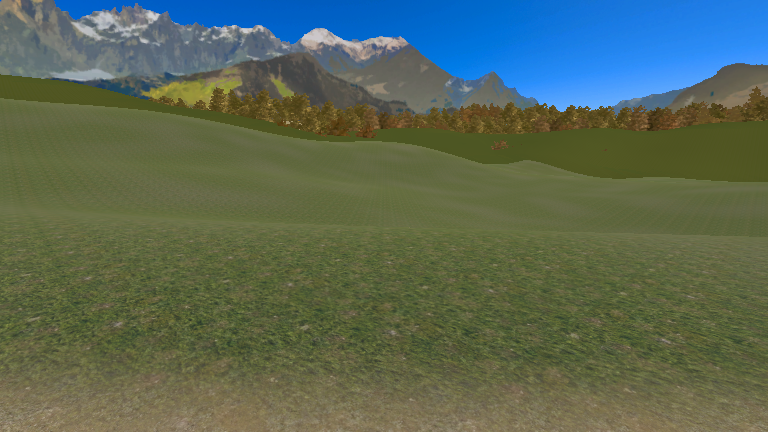
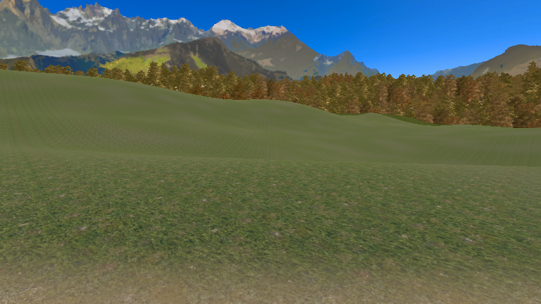
Editorの88視点を一覧確認。遮蔽更新後の95視点比較も差分なし。この時点で残っていた川上側の直線的な崖は、上段の修正で改善しました。実機性能は未確認です。確認記録
木の幹の青緑色を直し、新しい地形で浮いていた植生4個を接地させました。追加のテクスチャや描画パスは使っていません。
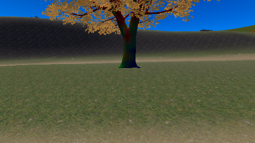
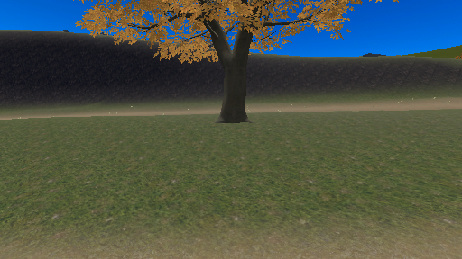
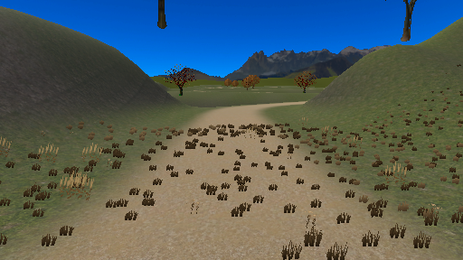
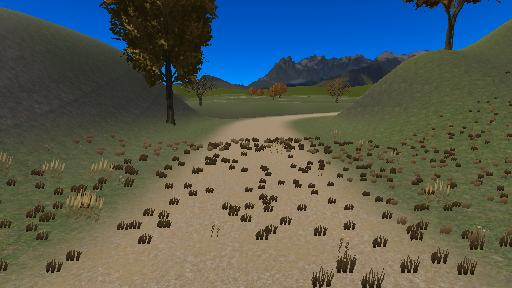
Editor画像です。遠景と地表の境界には仕上げが残ります。遮蔽更新後の95視点比較で表示の差分は検出されませんでした。確認記録
一周検査で見つかった「ベンチ座面へ犬が持ち上がる」問題は、ベンチを避ける経路に直し、6匹の短区間通過を確認しました。その後、現行地形の正逆両方向で6匹の一周を自動検査で確認しました。人の歩行・実機性能の確認は残っています。詳細・残る確認
木15本、川岸の石61群、草24区画を全周へ追加しました。岸の小さな変化で自然さを出し、犬と歩く道は広く保っています。
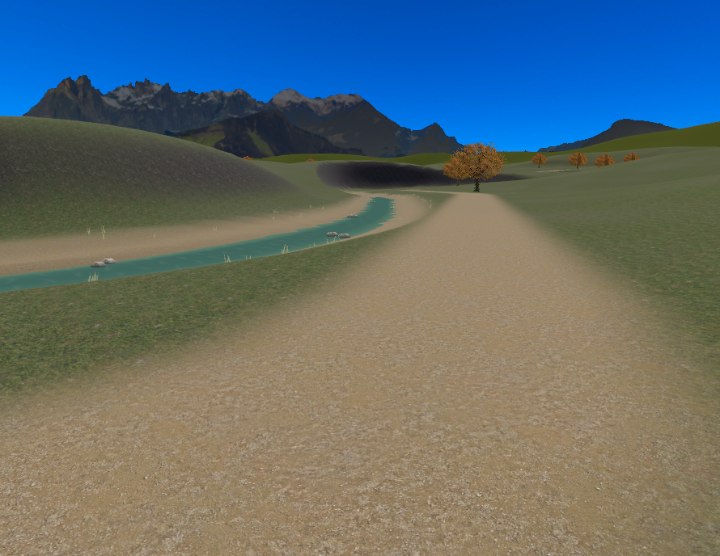
木は遠くで簡略表示に切り替え、草と石は離れると描画を省きます。地面・橋・犬の処理と当たり判定は維持します。丘の陰の遮蔽はEditorで比較済み。実機での16人参加の性能は未確認です。
保存後の構造検査 ／ 制作・計測記録。見た目の採用、VR・Quest 3／iPhone 15 Proの確認は残っています。
既存の夜モードで、水面だけが明るく残らないことを確認しました。夜専用の反射や追加ライトは使っていません。
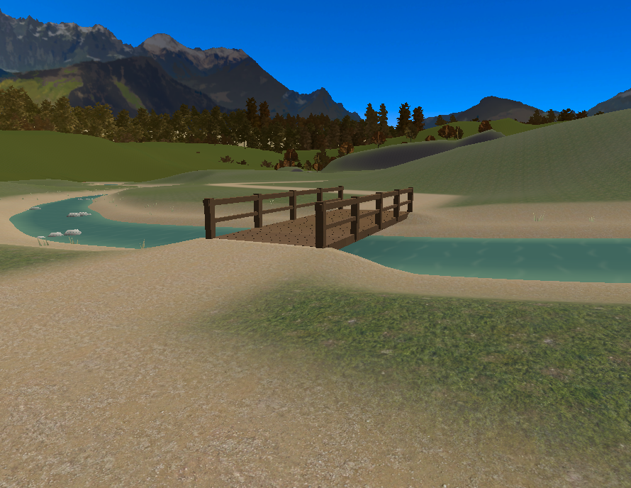
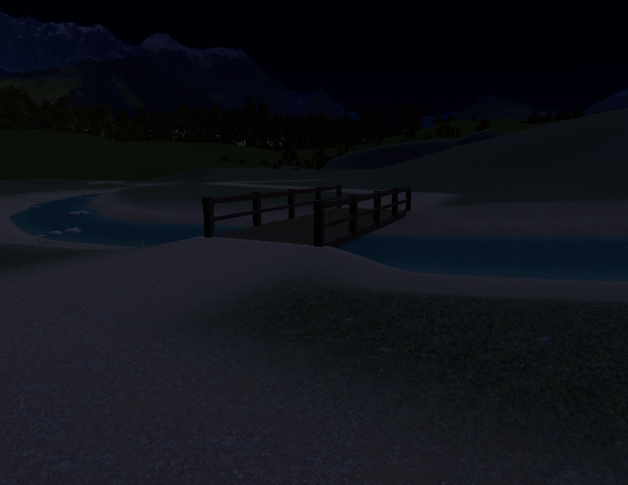
複製材質によるオフスクリーン確認です。実際の切替、VR両眼、Quest 3／iPhone 15 Proでの歩きやすさは未確認。描画確認の記録
地形を使う標準の遮蔽処理を追加しました。95視点の画像比較では、見える景色に差は出ていません。同じ3地点で描画量も比較しました。
draw callsは橋 303→304、川辺 319→131、奥広場 294→79。犬・道・橋の当たり判定は維持します。
低解像度の単眼画像とEditorの固定視点計測です。VR/写真カメラ・実機・16人時の確認は残ります。比較記録
入口の両側で、1・3・6匹を途中からつなぎ、周回から入口への帰還へ変更する6ケースを確認しました。つなぎ直しても入口の指定を保持します。川辺の全地点や実通信を確認した結果ではありません。途中接続・帰還の記録
現行の斜面で、6匹の正逆一周を確認しました。現行の正方向一周の記録。全頭が436地点の近傍と門の周回境界を通過。逆行・不連続移動・実行時エラーは検出されていません。現行の逆方向一周の記録
景観・斜面の最終調整前に、6匹で正方向の一周を連続確認しました。全436地点の近傍を通り、門を越えて次の周へ進みました。逆行や不連続移動は検出されていません。
持ち手を自動で動かすClientSim検査です。人の操作による20分歩行や、実機・16人性能の合格ではありません。正方向一周の記録
1・3・6匹で門を両方向に通る6ケースを確認しました。手元へ戻った犬が通過済みの地点を選び直す不具合も修正しています。
修正後に2つの橋と門をまとめて再確認し、1・3・6匹×両方向の18ケースで全頭が通過しました。逆向きの目標進行や位置の飛びは検出されていません。
持ち手を自動で動かすローカル検査です。人の操作による一周・実際の所要時間・複数人・端末の合格ではありません。門の修正前後 ／ 修正後の18ケース ／ 実機で確認する項目
本シーンを保全した別シーンに、600×720mの地形・川・小橋2基を構築しました。歩行設定2m/sなら約20分。経路とメニューを接続し、石・草・木とLODを追加済みです。夜のEditor描画も確認済みです。丘の陰の遮蔽はEditorで比較済み。犬連れの実歩行時間、VR/写真の表示、16人時の性能はこれから確認します。確認端末はQuest 3単体 / iPhone 15 Proです。
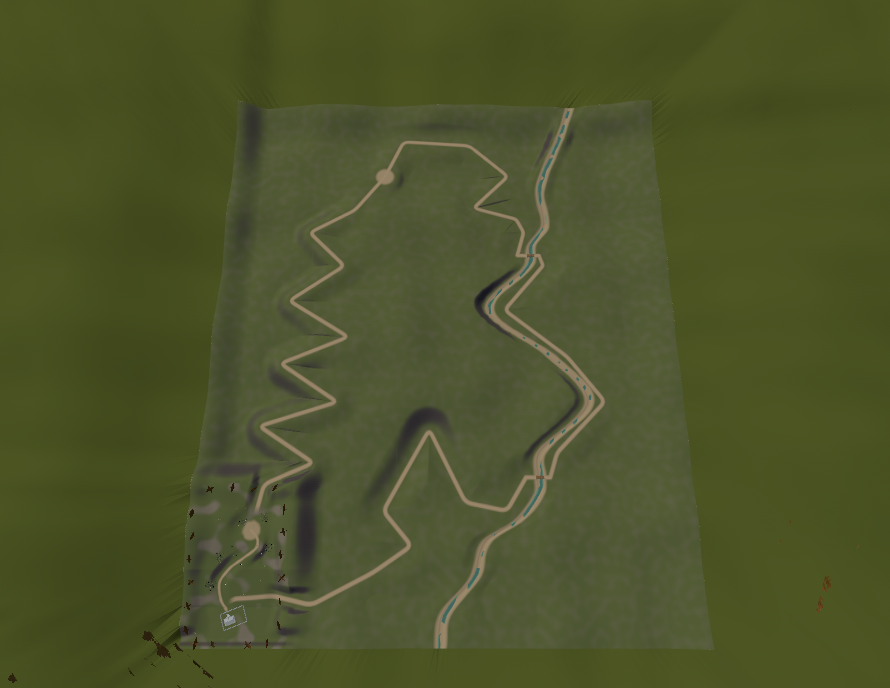
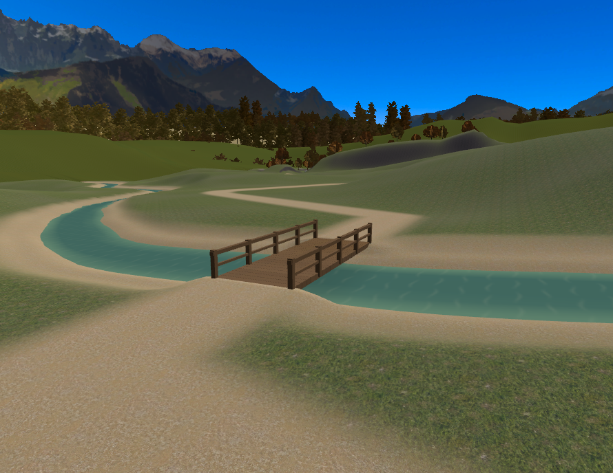
足場14,499点で穴なし、地形20枚の接合に段差なし。旧道・広場の保護範囲も確認。保存後のNavMesh検査では道沿い562地点、橋6経路、川床117地点の除外が通りました。犬の実際の散歩は未検証です。制作・計測記録 / 地形検査の記録
構成採用：既存エリアを保存し、奥・右側へ川沿いの周回を組み込む。
2026-09-27、ユーザーがコース構成を了承。犬が主役、景観は背景。現在程度の簡素さを許容し、Androidを含む16人参加・犬6匹の快適さを優先する。制作中の中心線は約2.41km。犬連れの実際の所要時間と端末性能は未確認。既存の113.9mを一周の最初の区間として使う。今の登り道と遊び場は位置・高さ・遊びを維持し、広場の背後と門前の右側だけを接続口にする。
実シーンは120×180mのTerrain 1面。道は17点・16リンク。門前から広場まで約17.4m登る。既存部分を基準として、新規地形と接続する計画が立てられる。
現状の犬は目的地への最短経路を選ぶ。川沿いを巡るには「一周の進行順」と「すぐ帰る経路」を分ける。橋・川岸・道のつながりまで制作対象に含める。
コース構成の採用まで確認済み。実装と、完成後の見た目・FPS・容量の合格はこれから確認する。仮の水面や通れない橋を完成品に残さず、後述の条件を満たして仕上げる。
「もう少し自然な見た目に」という指定を反映した代表区間です。左右の岸の傾斜を変え、浅瀬と砂利、小さな石のまとまりを追加。橋は控えめな木目と板ごとの色差を付けました。
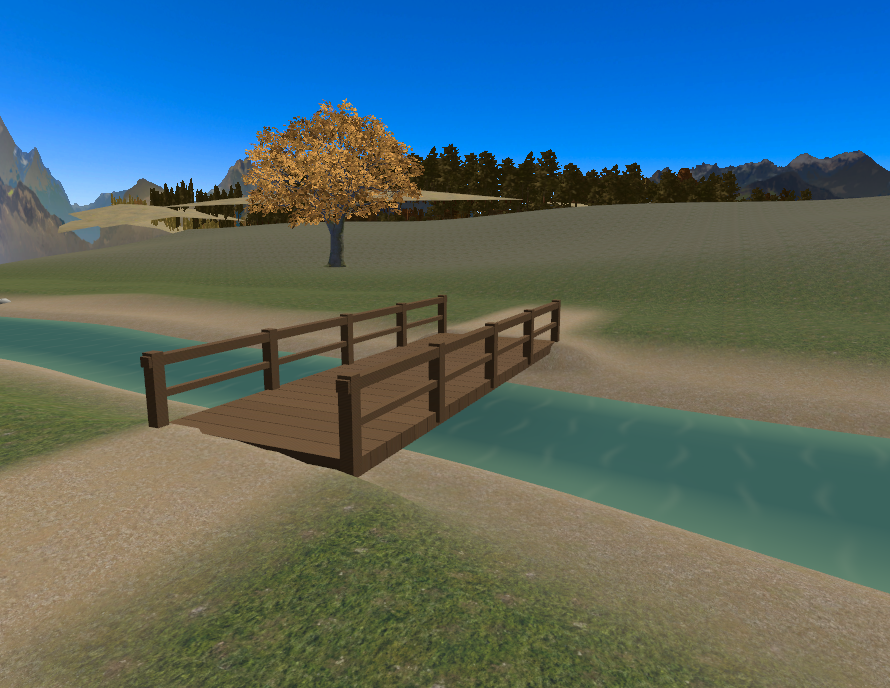
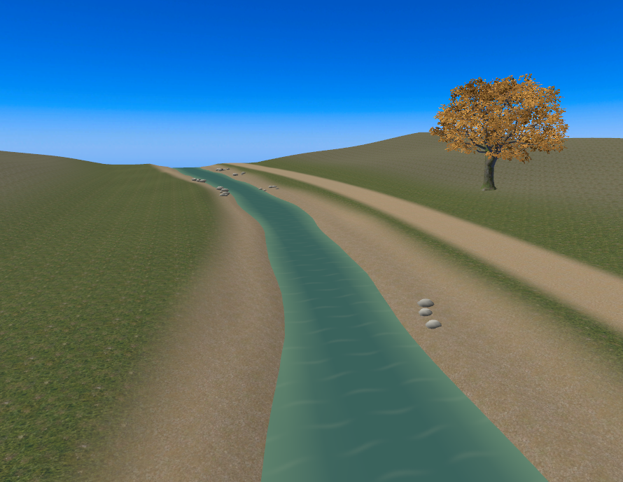
追加は水面の分割増と小石を合わせて2,544三角形・1 Renderer。木目は128×128の共有画像です。修正による容量増はAndroid 約62KiB / iOS 約81KiB。代表区間込みの全体は43.65 / 42.84MiBです。端末での処理時間や完成コースの容量を示す数値ではありません。
Unity Editorの昼景色・代表区間v2。完成景観やQuest/iPhoneでの合格画像ではありません。修正前の橋付近 ／ 検査・計測と残る作業
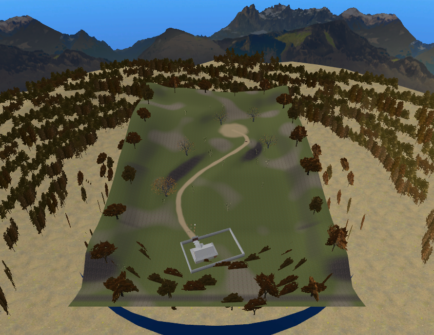
位置：門前 (47.6, 40.1)、見晴らし (80, 108)、広場 (72, 127)。座標は (X, Z)。図の上を奥 +Z、右を +X とする。
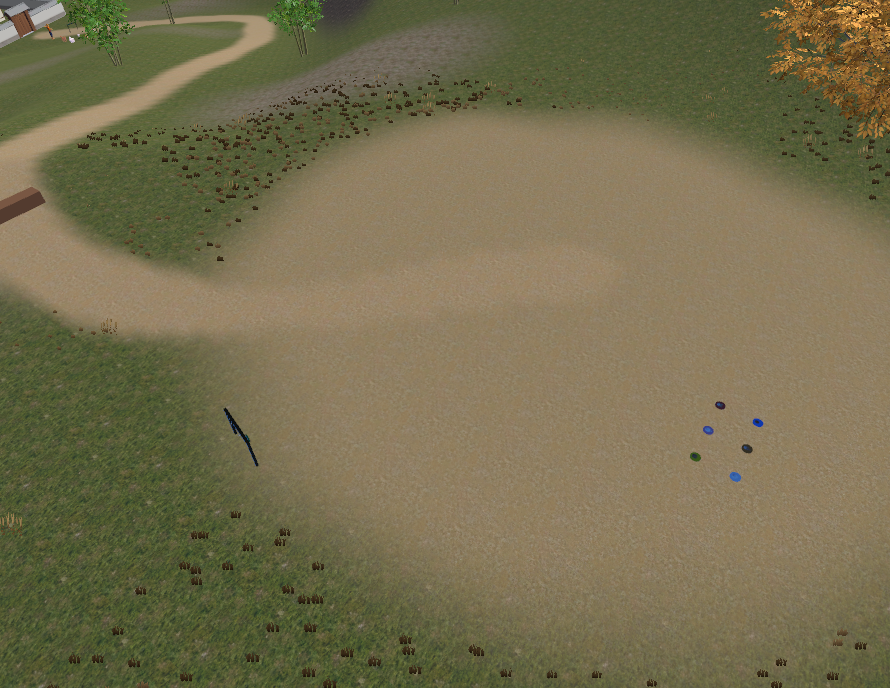
右側は「入口から山へ向いた図の右（+X）」として配置。今の広場を通過し、背後の林道を登った先に小さな奥の広場を設ける。そこから下りに入り、水音が近づき、川沿いの道につながる。
配置検討図。既存点は実シーン、新規点は設計案。縮尺は位置・規模の比較用で、山の輪郭は地形測量結果ではない。番号を選ぶと変更内容を表示。
旧道の生成曲線と、角を丸めた新道中心線の3D距離。実際に犬と歩いた軌跡ではありません。旧経路グラフ113.9mとは旧区間の計算法が約1.32m異なります。
2.0m/sは現在のプレイヤーの歩行設定。犬連れの平均実測速度ではありません。停止や寄り道を含めた時間は実機で確認します。
当初の1.81km案は設定速度で約15分だったため、林道と帰り道を延ばしました。約2.41kmを基準に、犬連れの実歩行と繰り返し遊ぶ楽しさを確認します。
地形生成に使う中心線の縦断。静的NavMeshは検査済み、犬連れの実歩行は未確認。川は上流から下流へ連続して低くし、岸の道は水面より高く保つ。
現在の120×180mを左下に残して構築した外枠。面積は今の約20倍。道だけを窮屈に折り返さず、林道と川の間に尾根を置ける余白を取る。
全面を同じ密度で作り込む面積ではない。120×180mのタイルを5×4区画で構築。必要な歩行帯を詳細化し、外側は軽い地形・遠景とします。採用の最終判定は実機性能と歩行確認後です。
既存広場からは来た道で戻れる。一周して門へ着いたら、犬やリードをリセットせず、そのまま次の周へ。逆回りは同じ経路の進行順を反転する。
追加の中途帰還路は地形が固まってから配置する。この図には未計上。瞬間移動で歩行距離を稼がず、一周の道は地続きにする。
奥の広場から下る途中は、斜面の下に川が見える。上流の小橋で対岸へ渡り、川を右手に見ながら下流へ。下流の小橋で元の岸へ戻り、古民家側へ緩く合流する。
犬の入水・泳ぎは別の行動追加になるため、この案には含めない。橋を渡り、岸で休める散歩コースとして仕上げる。
川をTerrainへ描くだけで済ませず、川底・岸の厚み・橋の取付けまで制作する。
上流から下流への流れ、曲がり角の岸、橋の下の抜け、水音の距離変化。川の始点・終点は谷や岩の奥につなげ、青い板が途中で切れた見え方をなくす。
モバイルの水面は、不透明・主描画1パスを起点に、小さな模様のUV移動と水の色・岸の形で成立させる技術案。反射カメラ、画面取得による屈折、多層透過を基準に含めない。既存の軽量シェーダーを先に確認し、不足時のみ専用制作する。昼夜・VR両眼・Android/iOSでの検証はこれから。
| 対象 | 現状で確認したこと | 本制作での変更 |
|---|---|---|
| 既存Terrain | 120×180m / 高さ範囲50m / heightmap 257 / 4層。 | 既存の座標・地面の細かさを保持。広場背後・門前右側の接続帯だけを整形。新しい地形は別TerrainDataで追加し、境界の高さ・法線・地面の塗りを合わせる。 |
| 生成ツール | BuildStageA は KH_World を削除して再生成する。 | 追加エリア用の生成単位を設け、既存の道・古民家・遊び場を消さない。接続帯の変更も設定として保存し、再実行で手調整を失わないようにする。 |
| 境界と遠景 | 既存の歩行境界はX=12〜108、Z=12〜168。中心付近に直径約561mと記録された遠景リング。 | 奥と右の接続口を開け、新しい外周に落下防止を移す。歩ける場所に入ってしまう遠景を再配置・分割し、新しい見晴らしからも端を見せない。 |
| 高さを読む処理 | 複数のEditor処理が最初に見つけたTerrainを使う。 | 指定座標を含むTerrainを選んで高さを読む共通処理へ。橋ではTerrainでなく橋面・NavMeshを使い、犬や道具が川底へ置かれないようにする。 |
| NavMesh | 生成範囲が中心(60,25,90)、寸法120×70×180mに固定。 | 新しい歩行帯と橋を収めて再構築。水面・川底への進入を除外。橋の欄干や岸で犬6匹が詰まらないことを検査する。 |
| 道のグラフ | 生成側は1本の道を隣接順に結ぶ。目的地は入口・広場の2つ。 | 複数区間と橋の接続を明示。長いコースは7m間隔を一律に増やさず、曲がり角・橋・分岐の密度を上げ、直線は間隔を広げる。 |
| 一周・逆回り | 犬は目的地への最短経路を選ぶ。現在の入口指定だけでは川経由を保証しない。 | 接続者が選ぶ周回方向と区間の進行状態を持つ。途中接続・逆回り・一周後の継続・通常帰還を区別し、接続犬だけへ反映する。 |
| 橋と川岸の行動 | 寄り道の場所を道からの水平距離で選ぶ。 | 橋上は寄り道を抑え、岸では安全な陸側を選ぶ。近接した両岸や高低差のある道を誤認しないよう、区間と高さも判定に使う。 |
| 拠点と案内 | 現在の入口・見晴らし・広場周辺を基準に配線。 | 奥の広場・川辺へリード拠点を追加。回収先は到達可能な経路距離で選ぶ。目的地メニューと現地の案内に周回方向を反映する。 |
現行は17点。約1.8kmを7m間隔で敷くと約260点となり、nextHop と routeCost は点数の二乗で増える。生の配列だけなら約0.54MBだが、Udonのシリアライズ・実行コストは別に計測する。
ChooseEntry は全点を走査するが、30mより遠い点を除外してからNavMeshを計算している。「全点で毎回NavMeshを計算する」とは扱わない。道までの距離計算は全リンク走査なので、長距離化では現在区間と近傍区間に検索を絞る。
同期の詳細設計は実装前に行う。周回の順番を犬6匹の所有者・途中参加でも再現できることと、他人の選択へ干渉しないことが必要。
容量・パフォーマンスを最優先の制約にする。16人参加・犬6匹の快適さを目標に、景観の美しさや密度は調整する。前案は仮の予算までで、表示区画と実機の余力は未確認。以下を制作前の検証条件として追加する。
岩・橋・植生のメッシュと材質を繰り返し使い、区画ごとに別の大型テクスチャを増やさない。地形データ・ライトマップ・NavMesh・音も合計に含める。
表示をOFFにしても、ワールドに含めた素材のダウンロード容量は減らない。
非表示の木や橋も、読み込み済みの素材は残る前提。端末向けのテクスチャ設定とデータの総量を確認し、長時間歩いたときの増加も測る。
エリア非表示を、別エリアのアンロードやメモリ解放とは扱わない。
足元は完成品質、離れた木立は簡略モデル、尾根の裏の細部は非表示。水面・葉の重なり・影・犬の処理を個別に測る。
FPSだけでなくフレーム時間と区画切替時の引っかかりも確認する。
地形タイルの四角い境界と、見える範囲の境界は別に設計する。まず6つの表示区画を候補にし、実際の目線で分割・統合する。川を上流から下流まで見通す直線にせず、曲がりと土手で次の景色を自然に隠す。
| いる場所 | 細かく見せる範囲 | 隠す境目・残す景色 |
|---|---|---|
| A 既存の道・広場 | 現在の遊び場と登り道、奥へ抜ける接続口 | 背後の尾根で新しい谷の細部を隠す。今の見晴らしから古民家は見えるまま。 |
| B 奥へ登る林道 | 現在の曲がり角と、前後の道 | 尾根の反対側にある川岸の小物を隠す。木立の輪郭は軽い遠景で残す。 |
| C 奥の小広場 | 休憩場所、下り始め、眺望に必要な範囲 | 見晴らしの区画は負荷の最悪候補。谷の形・必要な川面・古民家は残し、対岸の小物は省く。 |
| D 下り道・上流橋 | 斜面の足元、橋全体、両岸の取付け | 土手と川の曲がりで下流の細部を隠す。橋上では両岸の表示範囲を重ねる。 |
| E 中流の川辺 | 手前の水面、両岸、休める場所 | 上流・下流の曲がりの裏で分ける。対岸は見えるので一律に消さない。 |
| F 下流橋・帰り道 | 橋と川岸、門前へ合流する道 | 上流の細部は土手の裏へ。門に近づく前から既存エリアも表示する。 |
「現在地の区画だけ表示」にはしない。隣の区画・遠くても見える場所を含む表示範囲を作る。境目は重ね、振り返り・走行・低い目線でも出現や消失が見えない位置で切り替える。
作者の説明では、指定エリアの見た目を切り替え、GameObject自体は非アクティブにしない方式。範囲を重ねた同時表示と、常時表示の除外指定ができる。今回の木・岩・岸の小物の区画管理に合う候補。
作者の商品説明を確認（2026-09-27、掲載版v1.12）。中身のコードと各端末での動作は未確認。Terrain・Terrainの木/草・LODとの連携、初期表示と再入場の動作は導入前に調べる。
頭の向きから遮蔽を自動解析する道具ではなく、制作者が表示範囲を指定する方式。人数に応じて他エリアまで表示され続けないよう、基本は各プレイヤーのローカル表示として検証する。
対象は静的な景観の細部。犬・リード・道具・同期処理・当たり判定・NavMeshは区画の非表示に巻き込まない。犬のOwnerが遠くにいても、別の人の散歩が続く構成を守る。
地面・山の輪郭・古民家は別管理。Terrainやその草木はこの商品で消せると仮定せず、地形の詳細度・草の距離・木のLODを別に設定する。音と粒子の更新も、見た目の非表示だけでは止まると仮定しない。
Unity標準の遮蔽カリングも比較候補。大きな不透明な地形を遮蔽物にできるが、山で隠しただけで設定不要とはしない。効果と切替コストを測って方式を選ぶ。
代表区間の合格だけで全周合格にはしない。全周化で増える容量・常駐メモリ・地形・経路処理を再計測し、最後に60〜120分の継続を確認する。
元の道から新しい道へ、土・草・木の大きさと色を合わせる。川の岸や遠景を、立って見る目線・犬を撫でる低い目線・夜でも確認する。
橋で立ち往生しない、川へ飛び込まない、反対の岸へ吸われない。1匹・3匹・6匹、正回り・逆回り・途中開始・再接続・帰還を確認する。
PCVR・Quest単体・スマホで一周だけでなく60〜120分の継続を確認。発熱、メモリ、音の重なり、途中参加やOwner交代も記録する。
2026-09-27の追加前代理計測はAndroid 42.75MiB / iOS 41.78MiB。地形・NavMeshへ8MiB、水面・橋・岸へ6MiB、追加の植生・LODへ4MiB、環境音へ2MiBという配分は引き続き作業案です。
完成時の容量・性能は未確定です。 代表区間を加えたビルドとの差から配分し直す。20区画を敷く場合、同じ257点の高さ配列だけなら合計約2.64MBの生データになるが、圧縮容量・実行時メモリの合計とは別。
音質を一律に落として合わせず、素材の重複・テクスチャ・描画範囲から調整する。Android / iOSの公開上限とSDK実ビルドでの適合は最終確認する。
前案の「追加100コール」は裏付けのない仮配分だったため撤回。現行版の余力と、完成品質の代表区間を測ってから描画予算を決める。コール数だけで快適さを判定しない。
同じ木を面積20倍分並べず、足元の詳細・遠景の簡略化・尾根の裏の非表示を組み合わせる。広場から見渡す場面と、橋上で両岸が見える場面の負荷を先に確認する。
影・水面と葉の重なり・VR両眼・犬と参加者を含む実機のフレーム時間が判定の根拠。タイル分割や非表示だけでは、容量・メモリ・犬の処理は解決しない。
最終成果物は、全周を同じ品質で歩ける本番コース。制作途中では区間ごとに確認するが、仮地形・仮水面のまま完了にはしない。
現在のシーン・Terrain・経路・拠点を保存し、既存位置を比較できる記録を作る。実機の連続歩行速度を測り、この約1.8km案と600×720mの外枠を調整する。ここで川・橋・奥広場の位置を確定。
追加専用の生成範囲と複数Terrain対応を作る。奥の接続口と門前への帰着口、尾根・谷・川床を制作し、既存の道・広場との接続を検証。現在のStage Aの全面再生成は使わない。
代表区間を完成時の材質・光・水音で仕上げ、区画非表示の効果・境界の見え方・各端末の余力を判定する。未達ならここで調整し、合格後に同じ基準を全周へ展開する。橋は欄干・橋脚・岸への取付け・歩行面を含め、遠景も新しい移動範囲に合わせる。
NavMesh、区間グラフ、正逆の周回、途中からの合流、すぐ帰る操作を実装。橋の寄り道禁止と安全な川辺、道具の回収・目的地案内まで配線する。
既存区間の回帰確認 → 20分の実歩行 → 全端末の景観・負荷 → 60〜120分の繰り返し。未達箇所を直し、容量と実機結果を記録して完成とする。
採用した構成と、次に確かめること
「既存広場の背後から奥へ登る → 奥の小広場 → 右側の谷へ下る → 2つの小橋と川沿い → 門前」という構成を採用。主役は犬で、道中の要所に犬と遊べる小さな発見を設ける方向。具体的な小ネタは未選定。距離・寸法・水面方式・性能予算は実測後に確定し、代表区間の検証を通して全周へ展開する。
現行の斜面で測り直し、川辺では描画回数が315 → 129、奥広場では295 → 81でした。下流の橋ではほぼ差がありません。
Editor上の固定3視点・通常状態の犬6匹。Quest 3・iPhone 15 Proや16人参加時の実測ではありません。測定条件と原記録
PC向けSDKローカルビルドも成功：81.23MiB、エラー0。モバイルの代理容量とは別の測定です。実機表示・公開・16人性能は未確認。SDKビルド記録
LATEST MEASUREMENTAndroid 43.20 MiB ／ iOS 42.40 MiB。地形・犬の経路・遮蔽を更新した保存シーンで測り直しました。今回の斜面修正では木・テクスチャ・描画部品を増やしていません。
保存シーンの代理容量です。SDKでのアップロード容量、実機メモリ、16人時のFPSではありません。最新容量の原記録
旧17地点を保持した436地点の閉路と、6つの行き先を接続しました。山道から・川からの周回、奥の広場、川辺、既存の広場と入口を選べます。犬の経路の長さは約2.409kmです。
保存した経路とメニューのEditor検査は通過。犬の橋・門の短区間移動は確認済み。現行地形の6匹の正逆一周はローカル確認済みです。自然さの見た目の確認・人の歩行・16人参加と端末性能は残っています。実装と確認範囲 ／ 経路検査 ／ メニュー検査
Unityの接続先・開いているシーン・Terrainの寸法・通過点・経路距離を読み取り確認。初回調査時点ではPlay・ビルド・地形生成・シーン保存は未実施。着手承認後の変更と測定は上の制作記録に続く。撮影用に動かしたScene Viewは元の視点へ戻し、シーンがdirtyでないことを確認した。
人の連続歩行速度、実機のFPS・メモリ、新しい川の端末別描画は未測定。容量は上段のPC SDKとモバイル代理計測を参照。2026-09-26体験会のスマホ「快適」は所感であり、今回の拡張の性能保証には使っていない。